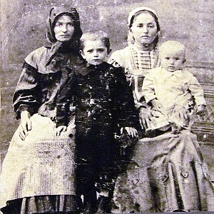
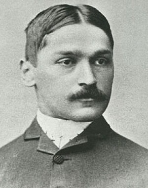

Early Life & Education
Mihajlo Pupin was born on 9 October (27 September, OS) 1858 in the village of Idvor (in the modern-day municipality of Kovačica, Serbia) in Banat, in the Military Frontier in the Austrian Empire. He always remembered the words of his mother and cited her in his autobiography, From Immigrant to Inventor (1925):
“My boy, If you wish to go out into the world about which you hear so much at the neighborhood gatherings, you must provide yourself with another pair of eyes; the eyes of reading and writing. There is so much wonderful knowledge and learning in the world which you cannot get unless you can read and write. Knowledge is the golden ladder over which we climb to heaven; knowledge is the light which illuminates our path through this life and leads to a future life of everlasting glory.”
Pupin went to elementary school in his birthplace, to Serbian Orthodox school, and later to German elementary school in Perlez. He enrolled in high school in Pančevo, and later in the Real Gymnasium. He was one of the best students there; a local archpriest saw his enormous potential and talent, and influenced the authorities to give Pupin a scholarship.
Because of his activity in the “Serbian Youth” movement, which at that time had many problems with Austro-Hungarian police authorities, Pupin had to leave Pančevo. In 1872, he went to Prague, where he continued the sixth and first half of the seventh year. After his father died in March 1874, the sixteen-year-old Pupin decided to cancel his education in Prague due to financial problems and to move to the United States.
“When I landed at Castle Garden, forty-eight years ago, I had only five cents in my pocket. Had I brought five hundred dollars, instead of five cents, my immediate career in the new, and to me perfectly strange, land would have been the same. A young immigrant such as I was then does not begin his career until he has spent all the money which he has brought with him. I brought five cents, and immediately spent it upon a piece of prune pie, which turned out to be a bogus prune pie. It contained nothing but pits of prunes. If I had brought five hundred dollars, it would have taken me a little longer to spend it, mostly upon bogus things, but the struggle which awaited me would have been the same in each case. It is no handicap to a boy immigrant to land here penniless; it is not a handicap to any boy to be penniless when he strikes out for an independent career, provided that he has the stamina to stand the hardships that may be in store for him.”
Source: Wikipedia